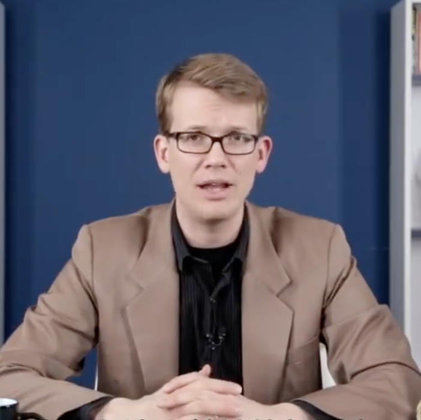

American video blogger, internet producer, musician, author, entrepreneur, and CEO. He is known for producing the YouTube channel Vlogbrothers, where he and his older brother, John Green, regularly upload videos, as well as for creating and hosting the educational YouTube channels Crash Course and SciShow. Green co-created VidCon, the world's largest conference about online videos, with his brother John,[1] and created NerdCon: Stories, a conference focused on storytelling. He is the co-creator of The Lizzie Bennet Diaries (2012–2013), a web series adaptation of Pride and Prejudice in the style of video blogs. He is also the founder of the environmental technology blog EcoGeek and the Internet Creators Guild, and co-founder of merchandise company DFTBA Records, crowdfunding platform Subbable—acquired by Patreon in 2015—game company DFTBA Games, and online video production company Pemberley Digital, which produces video blog adaptations of classic novels in the public domain. Green's debut novel, An Absolutely Remarkable Thing, was published on September 25, 2018; a sequel to the book is planned.